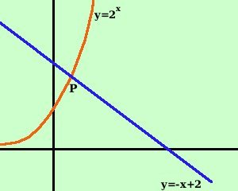

|
Risolvere la seguente disequazione esponenziale 2 2x > (2 - x)2 x Porto tutti i termini prima del disuguale 2 2x - (2 - x)2 x > 0 metto in evidenza 2x 2x [2x - (2 - x)] > 0 Essendo 2x una potenza e' un numero certamente positivo e quindi la mia disequazione si riduce a 2x - (2 - x) > 0 o meglio 2x > 2-x Questa equazione, coinvolgendo la x sia come base che come espoinente non e' risolubile in forma esatta, ma la risolveremo graficamente (in modo approssimato): considero come funzioni il termine prima del disuguale ed il termine dopo il disuguale y = 2x y = - x + 2  La prima funzione e' un esponenziale e la seconda funzione e' una retta: ne traccio i grafici Le due funzioni si incontreranno nel punto P a sinistra del punto P il grafico della retta supera il grafico dell'esponenziale e quindi la disequazione non e' verificata a destra del punto P il grafico dell'esponenziale supera il grafico della retta e quindi la disequazione e' verificata Il problema si riduce a trovare il valore del punto P in cui le due funzioni si intersecano si procede per tentativi
Del procedimento descritto sopra per ricavare l'ascissa di P di solito, negli esami di stato per il liceo scientifico, e' richiesta la traduzione in un linguaggio informatico: ( repeat until.. if.. then.. else..) repeat if retta maggiore di esponenziale then aumenta il decimale di 1 else scrivi la cifra decimale until la cifra abbia tot numeri decimali |